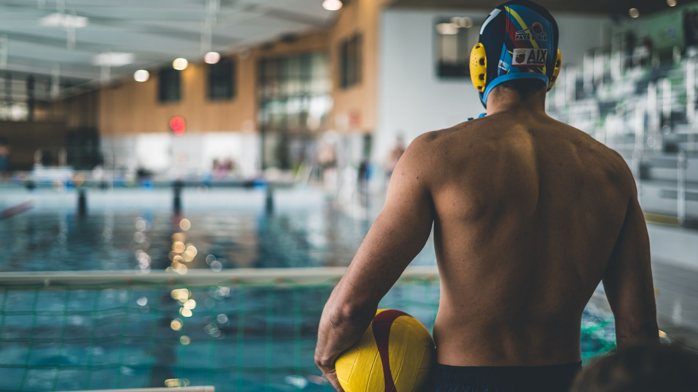

USA's Best U16 Water Polo Players Are Heading to the World Stage
USA Water Polo has officially announced the Men's Cadet National Team roster for the upcoming World Aquatics Under-16 Water Polo Championships. This exciting milestone highlights just how far dedicated youth development in aquatic sports can take a young athlete — all the way from local pool lanes to international competition. For families in Wesley Chapel, Land O' Lakes, and across the greater Tampa Bay area, this announcement is more than just exciting news. It is a powerful reminder of what is possible when young athletes commit to their craft early.
Why Youth Water Polo Development Matters
Every player named to that USA Cadet roster started somewhere. They started in a community pool, learning the basics of treading water, passing, and teamwork. The path from beginner to national team member is built on years of consistent training, strong coaching, and an environment that challenges young athletes to grow both physically and mentally.
Water polo is one of the most physically demanding team sports in the world. It combines the cardiovascular endurance of swimming with the strategic complexity of basketball and the physicality of wrestling — all while staying afloat. Young players who develop these skills early build a foundation that benefits them in sport and in life.
What It Takes to Compete at the Elite Level
The players on the USA Men's Cadet National Team did not arrive at this level overnight. Their success reflects a combination of key developmental factors that every aspiring young water polo player should understand:
- Strong swimming fundamentals: Every elite water polo player is first and foremost a strong swimmer. Speed, efficiency, and endurance in the water are non-negotiable at the national and international levels.
- Early exposure to structured competition: Young athletes who begin competing in organized leagues and tournaments gain experience that cannot be replicated in practice alone.
- Positional awareness and teamwork: Water polo rewards players who think ahead, communicate clearly, and trust their teammates. These skills develop over time through consistent team training.
- Physical conditioning and injury prevention: Mobility, strength, and proper technique all play a role in keeping young athletes healthy and performing at their best throughout a long season.
- Coachable mindset: The athletes who reach the national team level are those who embrace feedback, work on their weaknesses, and stay motivated even when progress feels slow.
The Opportunity Right Here in Tampa Bay
Families across the Tampa Bay area may not realize how strong the local foundation for aquatic sports truly is. Youth water polo is growing rapidly in Florida, and the competitive opportunities available to young athletes in Wesley Chapel, Land O' Lakes, and the surrounding communities have never been greater. Whether your child is an experienced swimmer exploring a new sport or a seasoned player looking to sharpen their skills, the path to high-level competition runs through intentional, well-coached training.
At Nexar Aquatic Academy, we are passionate about developing the next generation of aquatic athletes right here in our community. Our programs are designed to build the swimming skills and water polo fundamentals that form the backbone of every elite player's game. We believe that great coaching, a supportive team culture, and consistent hard work are the ingredients that turn local talent into nationally competitive athletes.
Let This Be Your Inspiration
The announcement of the USA Men's Cadet National Team is a celebration of youth aquatic sports at its highest level. But it is also an invitation — an invitation for every young athlete in the Tampa Bay area to dream bigger and work harder. The players wearing USA across their chests at the World Aquatics U16 Championships were once exactly where your child is today: learning, growing, and falling in love with the sport.
If your young athlete is ready to take the next step in their water polo or swimming journey, Nexar Aquatic Academy is here to help them build the skills, confidence, and competitive experience they need to chase their goals. The world stage starts right here at home.
Ready to get in the water?
First practice is completely FREE — no commitment needed.